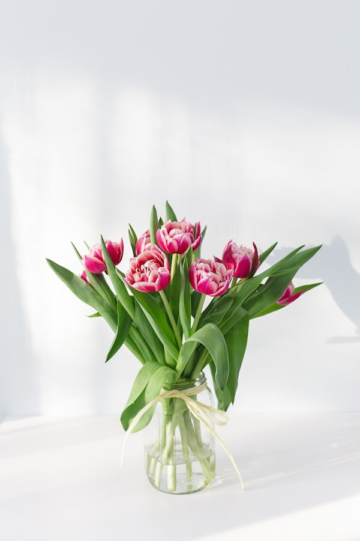

Best-seller

45€
Romance Éternelle
Roses rouges, pivoines roses et eucalyptus. Un bouquet intemporel, symbole d'amour et d'élégance.
Roses rouges, pivoines roses et eucalyptus. Un bouquet intemporel, symbole d'amour et d'élégance.
 39€
39€
Lisianthus, hortensias et roses dans des teintes douces de rose et lavande. Délicat et raffiné.
Tournesols, germinis jaunes et solidago. Un bouquet lumineux qui apporte joie et bonne humeur.
 38€
38€
Tulipes, renoncules et anémones dans un mélange vibrant qui capture la fraîcheur du printemps.
 42€
42€
Chrysanthèmes, dahlias et baies. Des teintes chaudes d'orange, bordeaux et cuivre pour une ambiance automnale.
 32€
32€
Marguerites, lavande et herbes sauvages. Un bouquet naturel et spontané, comme cueilli au jardin.
 80€
80€
Roses blanches, lisianthus et eucalyptus. Un bouquet élégant et intemporel pour sublimer votre robe le jour J.
Composition basse et élégante de roses, pivoines et feuillage. Parfaite pour vos tables de réception.
 49€
49€
Orchidée en pot de céramique blanche. Élégante et facile d'entretien, elle fleurit pendant plusieurs mois.
Nous créons des compositions personnalisées selon vos envies, votre budget et l'occasion.
Demander un devis